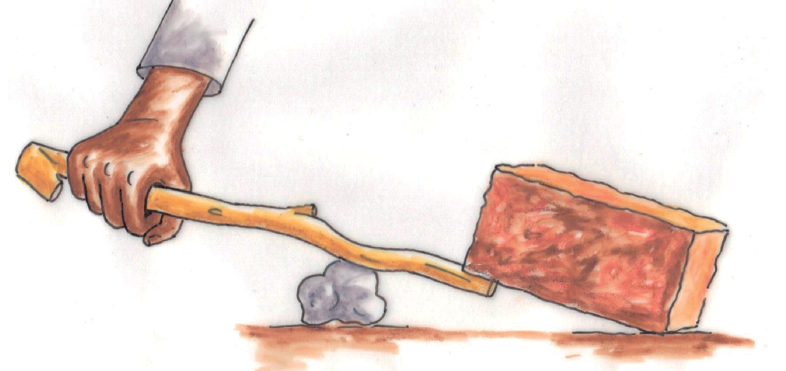
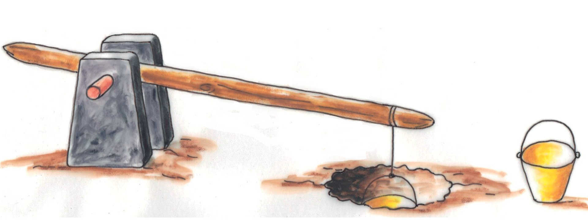
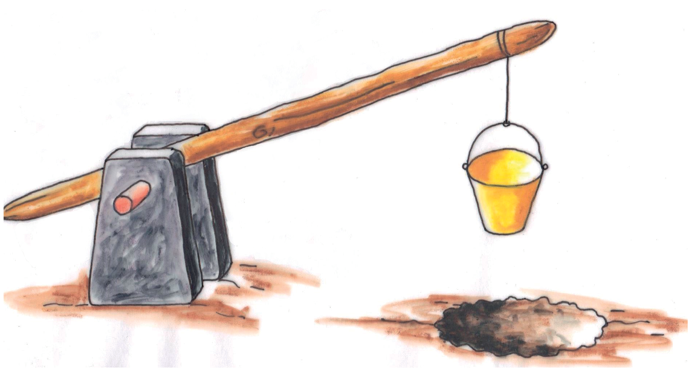
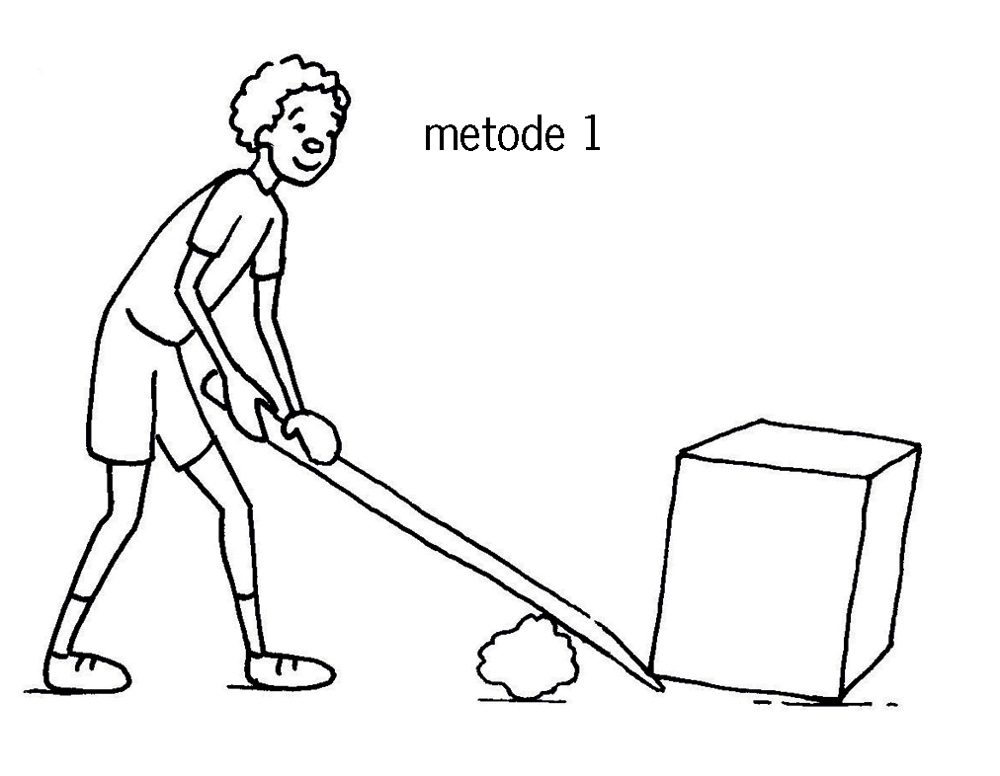
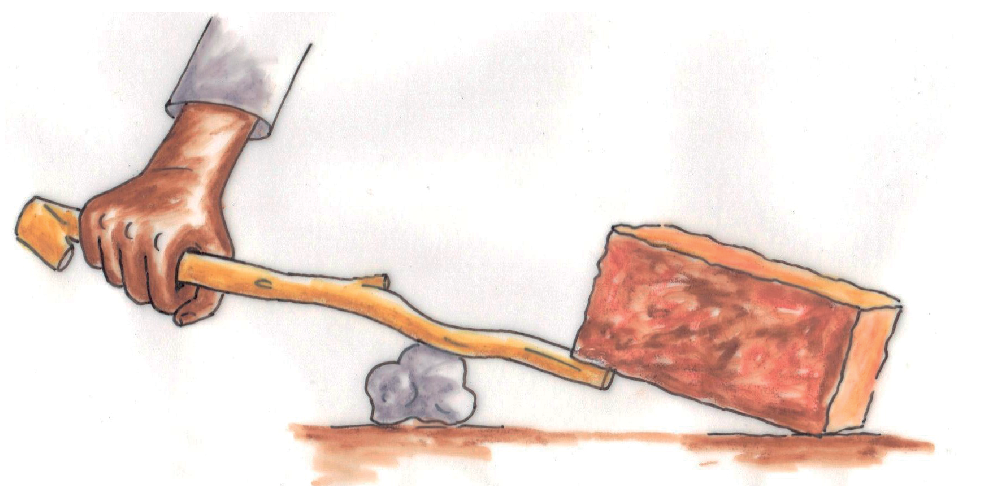
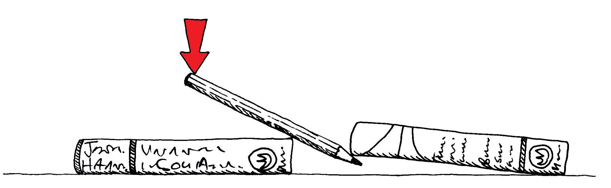
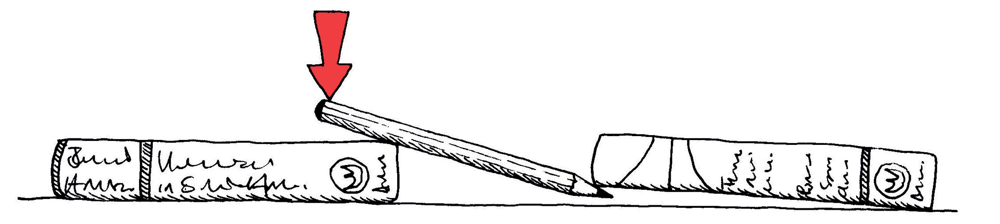
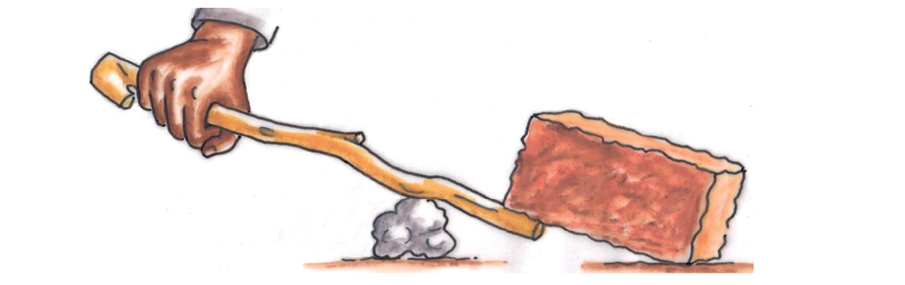
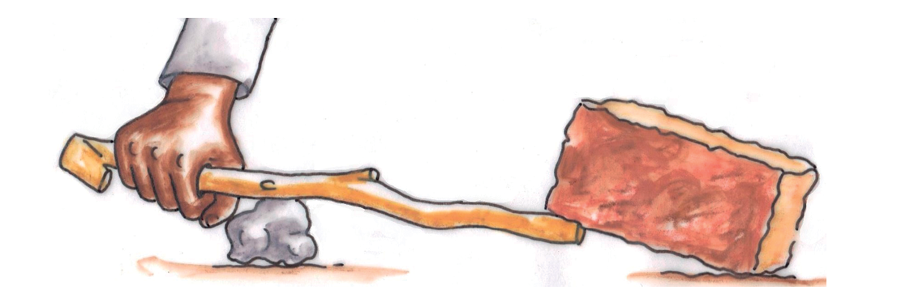

In hierdie hoofstuk gaan jy meer leer oor maniere waarop mense dit regkry om dinge te doen wat hulle nie met hul liggame kan doen nie.
Figuur 1

Spesiale projekte
As jy ’n bietjie tyd tuis of by die skool het, probeer gerus een of meer van die volgende aktiwiteite:
Bou ’n werkende model van die waterhefboom op die volgende bladsy. As jy dit binne die volgende twee dae kan maak, kan jy dit in les 4.3 gebruik.
Kyk versigtig na die kleurdiagramme op die volgende bladsy. Probeer om te sien watter eienskappe van hefbome in die diagramme gesien kan word. Skryf opskrifte vir die tekeninge om te verduidelik wat hulle uitbeeld.
Figuur 2

Figuur 3

Die emmers word gebruik om water uit die put te haal.
Lig voorwerpe met ’n hefboom
In die prente hieronder probeer Tom om die een kant van ’n betonblok met ’n hefboom op te lig. Die prente wys drie verskillende maniere waarop hy kan probeer om dit te doen.
Die punt waar die stok deur die kleiner klip ondersteun word, word die steunpunt of spilpunt genoem.
Watter manier dink jy sal die beste werk, en waarom dink jy so? Die hefboom rus op ’n kleinerige klip en sal op die klip beweeg. As Tom een punt van die hefboom afwaarts stoot, druk die ander punt die betonblok opwaarts.
Figuu 4a

Figuur 4b
Figuur 4c
Beskryf wat verskillend is in verband met die hefboom in elk van die drie gevalle hierbo.
Sluit by twee klasmaats aan en werk met ’n hefboom
Julle het drie voorwerpe vir hierdie aktiwiteit nodig:
’n stok van omtrent 30 cm lank, wat as hefboom gebruik kan word,
’n baksteen of klip omtrent so groot soos ’n baksteen, en
iets waarop die hefboom ondersteun kan word.
Doen nou die volgende:
Gebruik die stok as ’n hefboom om die een kant van die baksteen op te lig.
Figuur 5
Maak beurte om die stok as hefboom te gebruik om een kant van die baksteen op te lig. Gebruik verskillende posisies vir die steunpunt, sodat jy kan leer hoe om die vrae hieronder te beantwoord.
In watter geval help die hefboom jou die meeste? Is dit wanneer die steunpunt naby die baksteen is, of is dit wanneer die steunpunt ver van die baksteen is? Maak soos gewys word in die prent hieronder, en plaas jou potlood teen die kant van ’n boek en probeer om die een kant van ’n ander boek op te lig.
Figuur 6
Doen dit met die rand van die linkerkantste boek in verskillende posisies onder die potlood.
Figuur 7

In watter posisie van die steunpunt gee die potlood jou die meeste “voordeel” vir die oplig van die boek? Wetenskaplikes en tegnoloë gebruik die term “meganiese voordeel” wanneer hulle hierna verwys. In die prent hieronder gee die hefboom jou ’n groter meganiese voordeel as die steunpunt nader aan die baksteen is.
Figuur 8

Groot meganiese voordeel
Figuur 9

Klein meganiese voordeel
Kyk weer na Figuur 4 van hierdie hoofstuk. Watter metode gee aan Tom die grootste meganiese voordeel wanneer hy die hefboom gebruik?
In hierdie geval beteken die woord “voordeel” dat die hefboom dit vir jou makliker maak om die voorwerp op te lig.
As iets te swaar is om met die hand op te lig kan jy ’n hefboom gebruik om jou te help. As jy ’n swaar voorwerp wil oplig moet jy ’n lang hefboom gebruik, en moet die steunpunt naby die voorwerp wees wat jy wil oplig. As jy ’n sagte of swak afwaartse druk op die een kant van die hefboom uitoefen, sal daar ’n sterk opwaartse druk teen die voorwerp aan die ander kant van die hefboom wees.
Party woorde wat vir jou nuut mag wees, of wat op ’n nuwe manier gebruik word, word in aanhalingstekens gedruk, soos byvoorbeeld “voordeel”. Dit is om vir jou te sê dat jy dalk nie dadelik die woord mag verstaan nie, maar soos wat jy voortgaan met die les sal jy leer om dit te verstaan.